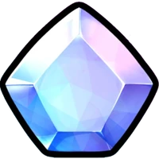

Items are used for various things. Most of the current items are used to evolve and feed/level up units. Some items are also very important to the game, Ex: Gems, Gold, Trait Rerolls, the Super Stat Chip and the Stat Chip. Items are obtainable through multiple sources, and serve as a main form of progression in Anime Vanguards due to their numerous uses.
Gems are used to Summon Units. Gems can be obtained by completing player Quests, finishing Story Mode acts, doing Legend Stages, claiming Battle Pass tiers, completing waves in Infinite Mode, staying in the AFK Time Chamber, logging in daily, redeeming Codes, and purchasing them with Robux.
Gold players to craft Items or Evolve Units. It can be obtained by completing Story Mode acts, doing Legend Stages, claiming Battle Pass tiers, redeeming Codes, and purchasing it with Robux.
You can reroll your unit's individual stats by using a Super Stat Chip or reroll all stats at once using a Stat Chip Stat Chips and Super Stat Chips can be obtained through and Achievements.
Traits modifiers that can be applied to a unit to increase its stats. To obtain a trait, you can use a Trait Reroll at the Mandra (Traits) NPC or be lucky enough to summon a unit with a trait. You only need to use ONE Trait Reroll to reroll a trait on ANY unit. This assists units on becoming better, faster and stronger.